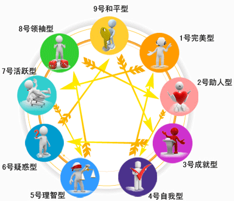

九型人格测试
32989 人测试过
2013-07-18 发布

② 本测试共包括单项选择题合计36题，完成测试约需要15分钟
③ 测试不可重复，做题时请按实际情况作答，系统会基于答题情况自动生成一份专业报告
④ 测试完成后，你可以在个人中心查看随时查看测试报告
开始测试
九型人格(Enneagram)，又名性格型态学、九种性格。它是一个近年来倍受美国斯坦福等国际著名大学MBA学员推崇并成为现今最热门的课程之一，全球500强企业的管理阶层均有研习九型性格，并以此为本，用以员工培训，团队建立，执行力提升等诸多方面。
九型人格不仅仅是一种性格分析工具，更主要的是为自我提升提供深入的洞察力，与当今其它性格分类法不同，九型性格揭示了人们内在最深层的价值观和注意力焦点，它不受表面的外在行为的变化所影响。 它可以让人真正地知己知彼，帮助人明白自己的个性，从而完全接纳自己的短处、活出自己的长处；可以让人明白其它不同人的个性类型，从而懂得如何与不同的人交往沟通及融洽相处，与别人建立更真挚、和谐的合作伙伴关系。
九型人格测试主要用于帮助你有效地掌握个人的行为习惯，测试中所回答的问题答案没有好与坏之分、没有正确与错误之别，它仅是反映你自己的个性和你的世界观。所以在测试的过程中，没有必要去揣摩哪个答案为更好一些，根据你的实际情况作答将有助于你更好地了解自身的优势和弱点，并知道在何种情形下你的行动将更为有效。
温馨提示:
① 本测试为付费测试，体验价格为：0.00元② 本测试共包括单项选择题合计36题，完成测试约需要15分钟
③ 测试不可重复，做题时请按实际情况作答，系统会基于答题情况自动生成一份专业报告
④ 测试完成后，你可以在个人中心查看随时查看测试报告
体验价￥0.00原价￥8.80
猜你喜欢：